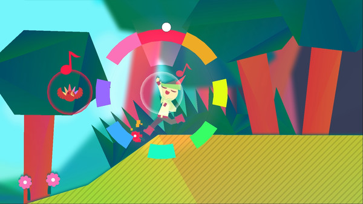

Wandersong
Overview

Wandersong is a musical adventure platformer where you play as a cheerful bard on a quest to save the world—not with violence, but with the power of song. Wielding your voice in place of a sword, you explore colorful towns, solve puzzles, meet interesting characters, and sing your way through a heartfelt journey.
Developed by Greg Lobanov, Wandersong is a love letter to empathy, optismism, and emotional resilience. It subverts classic hero tropes to make way for vulnerability and kindness, delivering a story that resonates far beyond its charming art style and clever mechanics.
So how well does this game sing in a landscape of combat-heavy titles?
Let’s Split the Screen and break it down.

Mechanics
At the heart of Wandersong is the singing wheel—a radial interface that lets you sing in eight directions. It’s used creatively across puzzles, platforming, and interactions. While mechanically simple, it’s deeply expressive, allowing the player to feel emotionally connected to actions without traditional gameplay verbs like “attack.”

Challenge
There’s no combat in Wandersong—and that’s the point. Challenge comes through puzzles, musical timing, and light platforming. Some sequences require quick thinking or rhythm, but overall, the difficulty is gentle and accessible, reinforcing the game’s emotional tone rather than testing precision or reflex.

Level Design
Each location is a distinct vignette—with new characters, story beats, and mechanics that reflect the local mood or theme. Levels are linear but imaginative, blending exploration with narrative moments. The world feels handcrafted, with each area tailored to support the story being told.

User Interface
The UI is clean, minimal, and expressive—with text boxes, musical prompts, and visual cues that guide without overwhelming. The singing wheel is intuitive and visually satisfying. The lack of traditional menus or combat HUD helps keep focus on interaction and emotion.

Narrative Design
Wandersong tells a subversive, deeply emotional story about failure, hope, and perseverance. Its protagonist isn’t "the hero" in a traditional sense—and the game wrestles with what that means. Dialogues are rich with personality, humor, and heart, delivered through expressive writing and memorable NPCs.

Audio
Wandersong tells a subversive, deeply emotional story about failure, hope, and perseverance. Its protagonist isn’t "the hero" in a traditional sense—and the game wrestles with what that means. Dialogues are rich with personality, humor, and heart, delivered through expressive writing and memorable NPCs.

Game Feel
Wandersong feels light, fluid, and expressive. The controls are responsive, but the emotional “feel” is more important—the way the bard dances, reacts, and interacts makes every moment feel alive. Singing into a rainbow, harmonizing with ghosts, or simply swaying to music is pure delight.